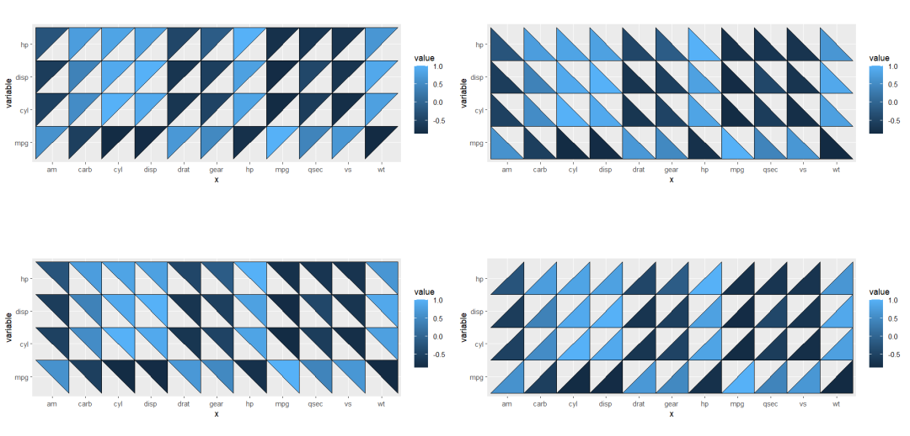
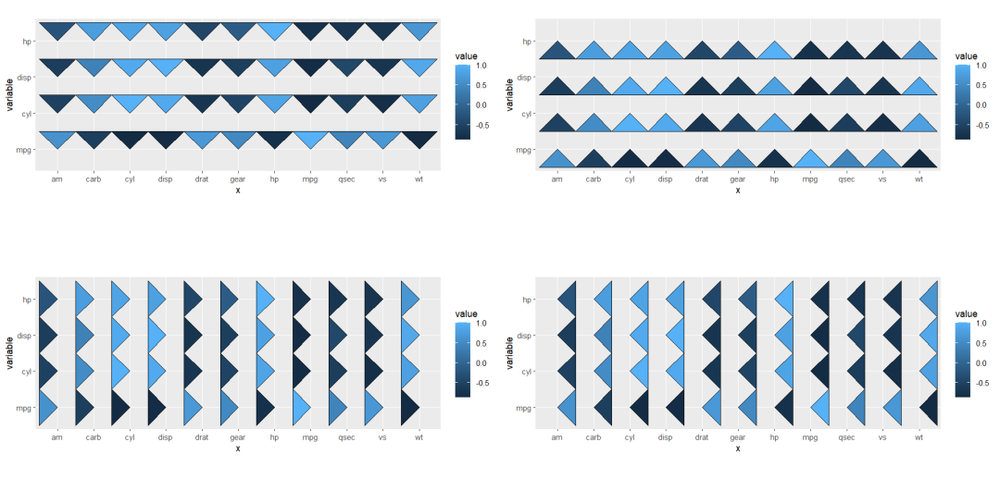
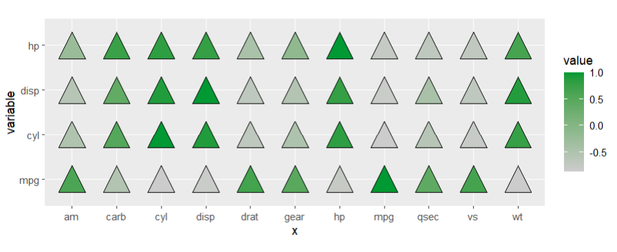
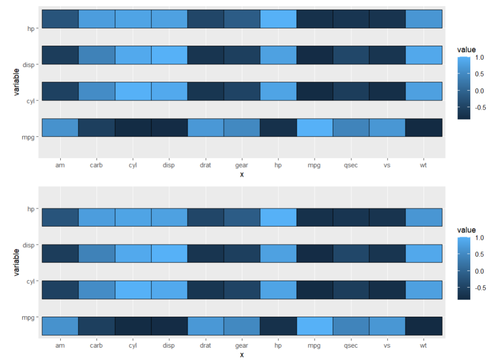
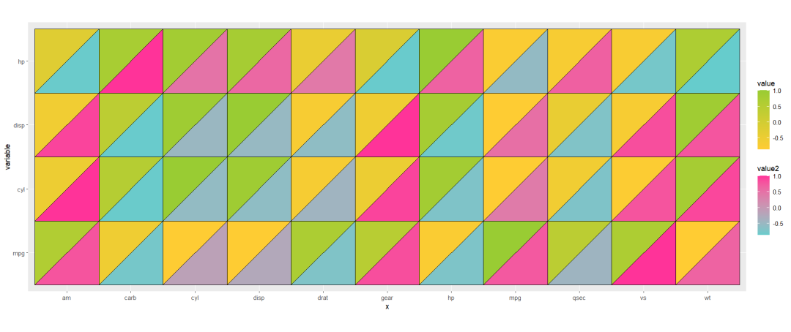
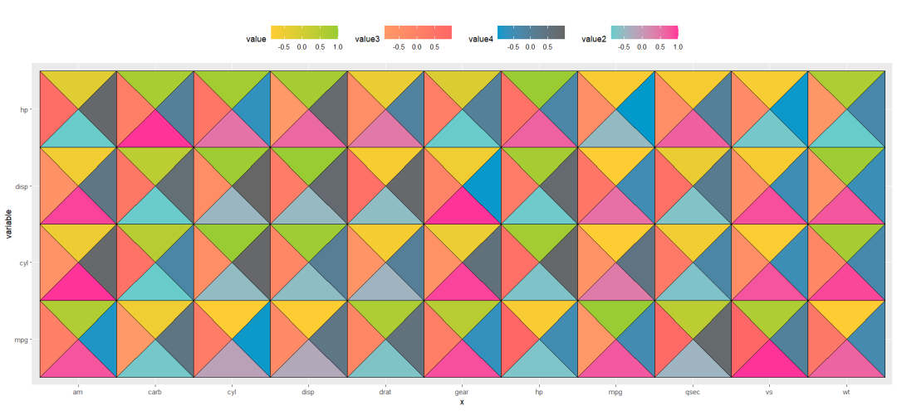
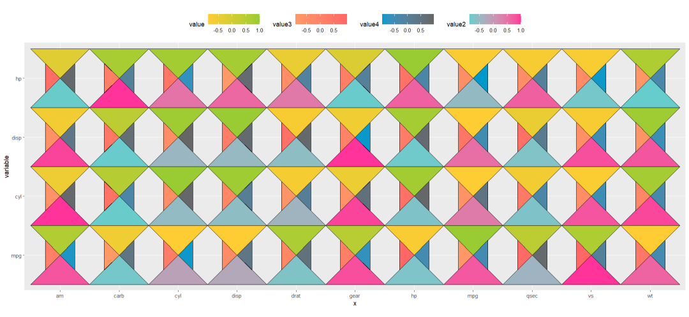
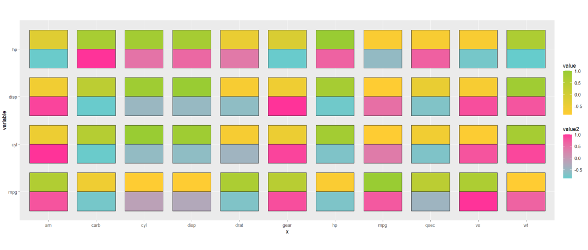

Chapter 7 geom_jjtriangle
geom_jjtriangle helps you to visualize multiple variables in multiple triangle graph parts.
first we prepare test data:
library(ggplot2)
library(jjPlot)
library(reshape2)
library(ggnewscale)
# test
cor_data <- cor(mtcars) %>%
data.frame() %>%
mutate(x = rownames(.)) %>%
melt(.,id.vars = "x")
cor_data <- cor_data %>% filter(variable %in% c('mpg','cyl','disp','hp'))
# add some value
cor_data$value2 <- rev(cor_data$value)
cor_data$value3 <- runif(44,min = -1,max = 1)
cor_data$value4 <- runif(44,min = -1,max = 1)7.1 right triangle
there are four types or right triangle can be ploted with giving a specified type:
# basic plot
pb <-
ggplot(cor_data,
aes(x = x,y = variable,fill = value)) +
coord_fixed()
# right triangle
pul <- pb + geom_jjtriangle(type = 'ul')
pbl <- pb + geom_jjtriangle(type = 'bl')
pur <- pb + geom_jjtriangle(type = 'ur')
pbr <- pb + geom_jjtriangle(type = 'br')
# combine
cowplot::plot_grid(plotlist = list(pul,pbl,pur,pbr),
nrow = 2,align = 'hv')
7.2 isosceles triangle
there are also four types or isosceles triangle can be ploted with giving a specified type:
# isosceles triangle
pmu <- pb + geom_jjtriangle(type = 'mu')
pmb <- pb + geom_jjtriangle(type = 'mb')
pml <- pb + geom_jjtriangle(type = 'ml')
pmr <- pb + geom_jjtriangle(type = 'mr')
# combine
cowplot::plot_grid(plotlist = list(pmu,pmb,pml,pmr),
nrow = 2,align = 'hv')
centri type, you can put the triangle in the middle:
# centri triangle
pb + geom_jjtriangle(type = 'centri',width = 0.6) +
scale_fill_gradient(low = 'grey80',high = '#009933')
7.3 rect graph
there are two types of rect:
# rect
pup <- pb + geom_jjtriangle(rect = T,type = 'upper')
pbt <- pb + geom_jjtriangle(rect = T,type = 'bottom')
# combine
cowplot::plot_grid(plotlist = list(pup,pbt),
nrow = 2,align = 'hv')
7.4 examples
here we show some examples.
exmaple 1:
# exmaple 1
ggplot(cor_data,
aes(x = x,y = variable)) +
geom_jjtriangle(aes(fill = value),type = 'ul') +
scale_fill_gradient(low = '#FFCC33',high = '#99CC33') +
# new legend
new_scale_fill() +
geom_jjtriangle(aes(fill = value2),type = 'br') +
scale_fill_gradient(low = '#66CCCC',high = '#FF3399') +
coord_fixed()
exmaple 2:
# exmaple 2
ggplot(cor_data,
aes(x = x,y = variable)) +
geom_jjtriangle(aes(fill = value),type = 'mu') +
scale_fill_gradient(low = '#FFCC33',high = '#99CC33') +
# new legend
new_scale_fill() +
geom_jjtriangle(aes(fill = value2),type = 'mb') +
scale_fill_gradient(low = '#66CCCC',high = '#FF3399') +
# new legend
new_scale_fill() +
geom_jjtriangle(aes(fill = value3),type = 'ml') +
scale_fill_gradient(low = '#FF9966',high = '#FF6666') +
# new legend
new_scale_fill() +
geom_jjtriangle(aes(fill = value4),type = 'mr') +
scale_fill_gradient(low = '#0099CC',high = '#666666') +
theme(legend.position = 'top') +
coord_fixed()
change width:
# change width
ggplot(cor_data,
aes(x = x,y = variable)) +
geom_jjtriangle(aes(fill = value),type = 'mu') +
scale_fill_gradient(low = '#FFCC33',high = '#99CC33') +
# new legend
new_scale_fill() +
geom_jjtriangle(aes(fill = value2),type = 'mb') +
scale_fill_gradient(low = '#66CCCC',high = '#FF3399') +
# new legend
new_scale_fill() +
geom_jjtriangle(aes(fill = value3),type = 'ml',width = 0.5) +
scale_fill_gradient(low = '#FF9966',high = '#FF6666') +
# new legend
new_scale_fill() +
geom_jjtriangle(aes(fill = value4),type = 'mr',width = 0.5) +
scale_fill_gradient(low = '#0099CC',high = '#666666') +
theme(legend.position = 'top') +
coord_fixed()
exmaple 3:
# exmaple 3
ggplot(cor_data,
aes(x = x,y = variable)) +
geom_jjtriangle(aes(fill = value),
rect = T,
width = 0.8,
type = 'upper') +
scale_fill_gradient(low = '#FFCC33',high = '#99CC33') +
# new legend
new_scale_fill() +
geom_jjtriangle(aes(fill = value2),
rect = T,
width = 0.8,
type = 'bottom') +
scale_fill_gradient(low = '#66CCCC',high = '#FF3399') +
coord_fixed()